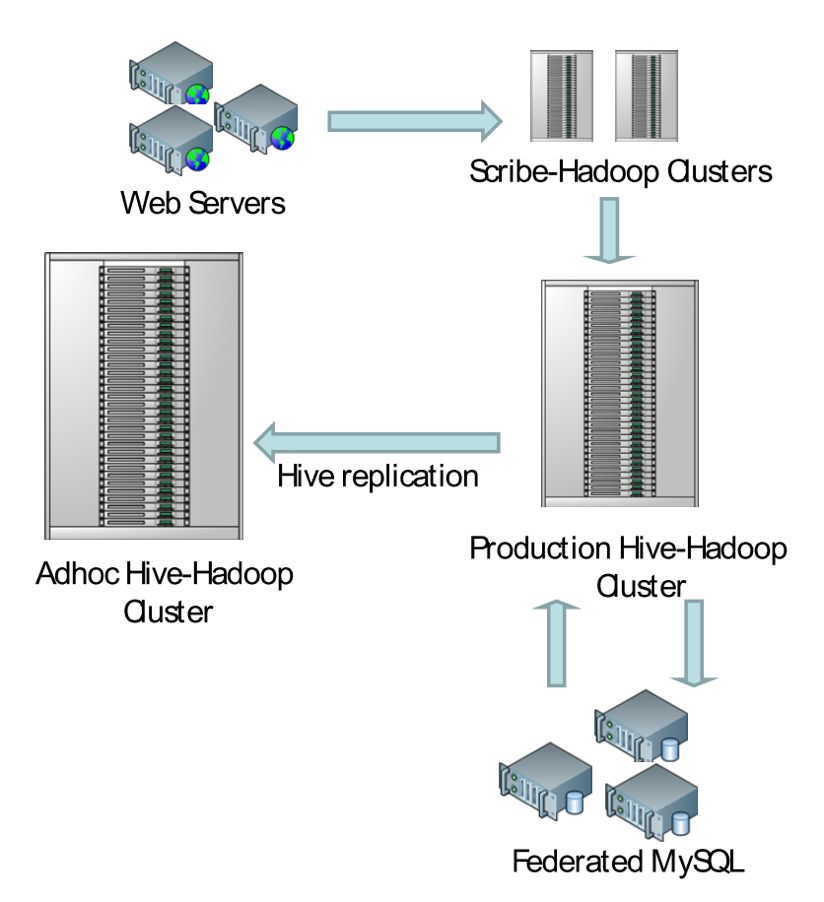

}
\section{Johdanto}
Sosiaalinen media tarkoittaa web-palveluita, joiden avulla käyttäjä voi luoda ja jakaa omaa sisältöään sosiaaliselle verkostolleen. Esimerkkejä tälläisistä palveluista ovat omien kuvien tai videoiden jakaminen, paikkatiedon jakaminen ja tuotteiden tai palveluiden suosittelu. Palveluita on kehitetty myös erityisesti työmaailmaan sopiviksi tehostamaan mm. ryhmätyöskentelyä ja tiedonvälitystä \cite{GJW07}. Tälläiset palvelut tunnetaan yleisemmin myös lyhenteellä OSN (Online Social Network) \cite{PES10.
Palveluissa käyttäjien jakama (tai tuottama) sisältö tunnetaan nimellä \emph{User-generated content} (UGC). Sisältö muodostuu erilaisista web-objekteista (kuvista, kommenteista, ym.), jotka toimivat palveluiden varsinaisena sisältönä \cite{YLM09}. Esimerkiksi suurin sosiaalisen median palvelu Facebook tallentaa käyttäjien luomaa sisältöä yli 30 miljardia objektia kuukaudessa \cite{Fac10.
Vaikka saman sektorin palveluita on useita, on palveluiden tuottaminen yleensä keskittynyt muutamalle palveluntuottajalle. Koska palveluiden idea perustuu sosiaalisiin verkostoihin, on kilpailijoiden vaikeaa saada tarpeeksi käyttäjiä omaan palveluunsa, jotta se voisi olla kannattava. Suosituimpien web-palveluiden käyttäjämäärät kasvavatkin yleensä varsin nopeasti, sillä palveluita käytetään maailmanlaajuisesti. Käyttäjät käyttävät palveluita myös hyvin aktiivisesti, yleensä jopa päivittäin \cite{Gol07.
Tässä artikkelissa tarkistellaan suurten käyttäjämäärien ja objektien tuomia ongelmia arkkitehtuurisella toteutustasolla. Seuraavassa kappaleessa taustoitetaan skaalautumista ja sen haasteita. Sitten tarkastellaan laajemmin Facebookin kokoluokkaa ja sen inspiroimia tekniikoita ja arkkitehtuuria. Lopuksi tehdään yhteenveto kaikista tekniikoista ja ratkaisuista, joita suuren kokoluokan sosiaalisen median palvelu joutuu rakentamaan.
\section{Suurten web-applikaatioiden taustaa}
Suurten web-applikaatioiden toteuttaminen poikkeaa ratkaisevasti pienistä, muutamalla koneella tuotetuista palveluista, sillä maailmanlaajuiset käyttäjämäärät tuovat useita haasteita toteuttamiseen.
\subsection{Vertikaalinen ja horisontaalinen skaalautuminen}
Web-applikaatiot ovat yleensä rakennettu kahden kerroksen arkkitehtuurilla. Ensimmäisessä kerroksessa on applikaatiopalvelin jolla on yhteys toiseen alempaan kerrokseen, eli tietokantapalvelimeen. Applikaatiopalvelin vastaanottaa käyttäjän pyynnön ja muodostaa vasteen käyttäjälle hakemalla tietokantapalvelimelta tarvittavat tiedot \cite{PES10.
Kun käyttäjämäärä kasvaa voidaan palvelua pääsääntöisesti skaalata kahdella tavalla: \emph{vertikaalisesti} ja \emph{horisontaalisesti}. Vertikaalisessassa skaalauksessa lisätään yksittäisten koneiden suorituskykyä. Tätä voidaan tehdä sekä applikaatiopalvelimissa, että tietokantapalvelimissa. Yksittäisen koneen suorituskyvyn yläraja tulee nopeasti vastaan. Lisäksi kustannukset suhteessa saavutettuun suorituskykyyn kasvavat huomattavasti \cite{PES10.
Horisontaalisessa skaalaamisessa koneiden määrää kasvatetaan. Tällöin myös vikasietoisuus paranee, sillä yksittäisen koneen hajoaminen ei estä palvelun käyttöä. Applikaatiopalvelimien lisääminen on helppoa, sillä ne ovat identtisiä ja toimivat samalla tavalla \cite{PES10.
Tietokantapalvelimien lisääminen horisontaalisesti ei yleensä ole mahdollista, sillä useampi palvelin ei voi samanaikaisesti muokata samaa tietosisältöä. Jos tietokannan tietosisältö voidaan jakaa omiin itsenäisiin yksiköihinsä, niin on mahdollista parantaa suorituskykyä näiden yksiköiden sisällä.
Sosiaalisen median palveluissa tieto mallintaa käyttäjien sosiaalisia verkostoja ja on tästä syystä vahvasti toisiinsa liittyvää. Tiedon jakaminen osiin on täten hankalaa \cite{Rot09, PES10}. Vahvasti toisiinsa liittyvä tieto yleensä jaetaan hajautuksella samanarvoisiin sirpaleisiin (shards) eri tietokantapalvelimille \cite{PES10.
\subsection{Tiedon hajautuksen ongelma: CAP}
Eric Brewer on esittänyt vuonna 2000 CAP-konjektuurin \cite{Bre02 hajautettujen web-palveluiden kolmesta halutusta ominaisuudesta ja niiden saavutettavuuksista. Kolme haluttua ominaisuutta ovat tiedon konsistenssi, saavutettavuus ja jakaminen (\textbf{C}onsistency, \textbf{A}vailability, \textbf{P}artitioning).
Hajautetun web-palvelun tietosisältöön kohdistuvat muokkaukset halutaan yleisesti pitää vahvasti konsistentteina. Tämä tarkoittaa ACID-ominaisuudet tyydyttävää tietokantamaista toimintaa, eli esimerkiksi muokkausoperaatioiden suorittaminen siten, ettei muokkauksen kohteena oleva tietosisältö minään hetkenä koostu vanhasta ja uudesta tiedosta. Tämä tiedon atomisuus vaatii esimerkiksi lukitusta, joka on haastavaa toteuttaa hajautetussa ympäristössä \cite{GiL02}.
Tiedon saatavuus halutaan myös pitää korkeana. Web-palvelua ei käytännössä ole olemassa jos sen tietoa ei voida saavuttaa. Jotta palvelu selväisi verkkokatkoksista esimerkiksi eri mantereiden välillä, on palvelu ylläpidettävä hajautetusti. Tämä hajautus taas vaikeuttaa tiedon pitämistä konsistenttina \cite{GiL02}.
Hetkellisen verkkokatkoksen aikana tehdyt päivitykset kahteen palvelinkeskukseen aiheuttavat tiedon synkronointiongelman, kun yhteys jälleen palautuu \cite{GiL02}. Saman tietosisällön hetkellinenkin jakaminen siten, että kaksi aiempaa haluttua ominaisuutta pysyvät voimassa on Brewerin mukaan mahdotonta. Käytäntö on osoittanut, että vain kahta näistä kolmesta esitellystä omainaisuudesta voidaan pitää samanaikaisesti voimassa \cite{Bre02}.
\subsection{Kevyempi arkkitehtuurimalli: BASE}
Tietokantojen ACID-mallin rinnalle on hajautettujen web-applikaatioiden yleistymisen myötä noussut BASE-malli (\textbf{BA}sically available, \textbf{S}oft state, \textbf{E}ventually consistent). Mallissa otetaan huomioon web-applikaatioiden erityispiirteet, kuten sivulatausten aiheuttaman viiveen, joka mahdollistaa tiedon tallentamisen kevyimmin ehdoin \cite{Pri08}.
Ehdottoman saatavuuden (kaikki saatavilla, tai ei mitään saatavilla) sijaan tieto pyritään palvelemaan niin hyvin kuin mahdollista. Palvelu tulee olla rakennettu siten, että jos esimerkiksi 20% tietosisällöstä on hetkellisesti saavuttamattomissa, niin se vaikuttaa vain osaan käyttäjistä. Parhaimmassa tapauksessa suurin osa käyttäjistä ei edes huomaa katkosta. Tämä on mahdollista saavuttaa jakamalla tieto toiminnallisiin kokonaisuuksinsa \cite{Pri08}.
Web-palveluissa, jotka eivät esimerkiksi käsittele rahaa, voidaan vahvasta transaktionaalisuudesta joustaa. Katkoksen tapahtuminen kriittisellä hetkellä on yleisesti harvinaisia ja luopumalla transaktioista voidaan saavuttaa parempi suorituskyky ja joustavampi arkkitehtuuri. Lisäksi virhetilanteita voidaan välttää esimerkiksi suunnittelemalla operaatiot \emph{idempotenttisiksi}, eli siten, että operaatio voidaan ajaa useasti peräkkäin ja sen vaiktus tietosisältöön on sama \cite{Pri08}.
Hetkelliset poikkeamat käyttäjille näkyvässä tietosisällössä voivat hyvinkin olla käytännössä siedettäviä. Esimerkiksi kun käyttäjä jakaa jonkin tiedon kaveriverkostolleen, voidaan tiedon näyttämistä muille viivästyttää useitakin sekunteja. Riittää, että muutoksen tehneelle käyttäjälle annetaan illuusio välittömästä päivittämisestä \cite{Pri08}.
\subsection{Recovery-oriented computing}
Tietojärjestelmät pyritään suunnittelemaan siten, että niissä esiintyy virhetilanteita mahdollisimman vähän. Kuitenkin kaikesta suunnittelusta huolimatta katkoksia tapahtuu. Suurilla käyttäjämäärillä häiriöt voivat maksaa paljon, esimerkiksi amazon.comin tunnin katkoksen on arvioitu maksavan $200,000. Artikkelissa \emph{''Toward Recovery-Oriented Computing''} Fox määrittelee mallin, jossa järjestelmien vikaantuminen otetaan suunnittelun lähtökohdaksi \cite{Fox02}.
\emph{Recovery-oriented computing} ottaa lähtökohdaksi kaikkien kerroksien vikaantumisen ja keksittyy siihen, kuinka nopeasti tilanne voidaan palauttaa ennalleen. Vikatilanteet ovat myös hyvin ennustettavissa, sillä esimerkiksi kovalevyjen keskimääräinen vikaantumisaika on hyvin tiedossa.
Lisäksi palvelun laatu saattaa parantua loppukäyttäjän näkökulmasta, sillä jos esimerkiksi palvelun alimman tason virhe korjataan palautumalla mahdollisimman, näyttää se ylemmälle tasolle vain hetkelliseltä suorituskykyongelmalta.
Lisäksi palvelun yleistä toimintavarmuutta voidaan parantaa jos tuotantopalvelimet palautetaan hyvin testattuun ja toimivaan alkutilaan jatkuvasti, esimerkiksi viikoittain. Tällöin muistivuodot ja resursseja varaamaan jääneet prosessit korjaantuvat automaattisesti.
\section{Facebook.com}
Alexa-yhtiön ''Top 500 Global Sites'' WWW-sivujen suosituimmuuslistauksessa olivat lokakuussa 2010 mm. seuraavat sosiaalisen median palvelut: Facebook.com (2), Youtube.com (3), Linkedin.com (23) ja Flickr.com (36) \cite{Ale10}. Luvut perustuvat palveluiden omiin ilmoituksiin, joita voitaneen pitää yleisesti luotettavina tai ainakin suuntaa-antavina.
Facebook.com on kirjoitushetkellä ylivoimaisesti suurin sosiaalisen median verkosto, jossa käyttäjät voivat jakaa kuviaan, videoitaan ja vaihtaa viestejä. Seuraavassa on listattu muutamia tunnuslukuja:
Yli 500 miljoonaa aktiivista käyttäjää
50\% käyttäjistä kirjautuu palveluun päivittäin
Käyttäjällä on keskimäärin 130 \emph{ystävää}, eli henkilöä, jonka tuntee palvelussa.
Facebook palvelee yli 150 miljoonaa samanaikaista mobiilikäyttäjää.
Lisäksi Facebook tarjoaa myös kehittäjille API-rajapintoja, joiden kautta oma palvelu integroituu käyttäjän kannalta osaksi Facebookkia. Aktiivisia Facebook-sovelluksia on tällä hetkellä 550,000 kappaletta. 70\% palvelun käyttäjistä käyttää jotakin sovellusta vähintään kerran kuukaudessa \cite{Fac10.
Vuonna 2009 Facebook palveli yli 200 miljardia kuukausittaista sivunäyttöä ja käyttäjistä 70\% tuli Yhdysvaltojen ulkopuolelta. Palvelua ajettiin n. 30,000 palvelimella, joista suurin osa oli applikaatiopalvelimia, jotka ajoivat PHP- ja C++-koodia. Palvelimet sijaitsevat kahdessa palvelinkeskuksessa Yhdysvaltojen itä- ja länsirannikoilla \cite{Rot09.
Suuri osa palvelun kehittämisen ja skaalaamisen yhteydessä kirjoitetuista komponenteista on julkistettu vapaana lähdekoodina \cite{Fac10b,TSA10}.
\subsection{Kuluttajatason laitteiden käyttö}
Facebook tallentaa päivittäin valtavat määrät tietoa, josta muodostetaan mm. palveluun sisältöä käyttäjille, raportteja ja statistiikkaa mainostajille. Facebookin työntekijöiden Thusoo et al. kirjoittamassa artikkelissa \emph{''Data Warehousing and Analytics Infrastructure at Facebook''} \cite{TSA10} kerrotaan päivittäin talletettavan datamäärän ylittävän kirjoitushetkellä 60 teratavua päivässä kokonaistietomäärän ylittäessä 15 petatavua. Tästä tiedosta kaikki on pidettävä tallessa.
Tallennettavan tiedon määrä myös kasvaa jatkuvasti voimakkaasti: 6kk ajanjaksolla päivittäin talletettavan tiedon määrä kolminkertaistui. Tälläisen tietomäärän tallentaminen ja hallinta siten, että tietoa voidaan hyödyntää eri käyttötarkoituksiin samalla säilyttäen kustannustehokkuus ja skaalautuvuus asettaa uusia haasteita, joita harvoissa palveluissa on jouduttu ratkaisemaan \cite{TSA10}. Tärkein vaatimus Facebookin arkkitehtuurin suunnittelussa on skaalautuminen horisontaalisesti käyttäen halpoja kuluttajatason laitteita \cite{TSA10, LaM10}
Koska palvelu on muodostettu tuhansista palvelimista ja verkkolaitteista, on laite jatkuvasti vikaantunut. Järjestelmät on suunniteltava siten, että vikatilat ovat sääntö, eivätkä poikkeus \cite{LaM10}.
\subsection{Laskennan ja tallentamisen hajauttaminen}
Vuonna 2007 Facebookin tiedonprosessointi oli rakennettu relaatiotietokannan päälle. Relaatiotietokanta ei pystynyt toimimaan riittävän nopeasti jatkuvasti kasvavassa ympäristössä. Tiedon prosessointi jäi jatkuvasti jälkeen yhden päivän tietomäärän prosessoinnin viedessä yli 24 tuntia. Suurin osa Facebookin toiminnallisuudesta perustuu tiedon analysointiin ja laskentaan. Relaatiokannasta luopuminen ja siirtyminen uudenlaiseen prosessointimalliin oli välttämätöntä \cite{Fac09a}.
Nykyään tietoa tallennetaan viivästetysti siten, että sen tallentaminen ei haittaa arkkitehtuurin muuta toimintaa. WWW-applikaatiopalvelimien tuottama logitieto tallennetaan eräajoina väliaikaiseen tietovarastoon, josta se talletetaan edelleen kahteen päätietovarastoon: tuotantoon ja \emph{adhoc}-tietovarastoihin. Viive tiedon siirtämisessä kyselyitä varten on maksimissaan 15 minuuttia. Tuotantotietovarastosta tieto siirretään edelleen MySQL-klusteriin, kun taas adhoc-tietovarastosta kuka tahansa kehittäjä voi ajaa tarvittaessa kyselyitä häiritsemättä tuotantoa. Adhoc-tietovarastoon jätetään kaikki data, jotta kyselyitä on mahdollista muodostaa myös vanhasta datasta. Vanha tieto kompressoidaan ja arkistoidaan hitaammalle ja halvemmalle levyjärjestelmälle. Toiminta on kuvattu kuvassa TODO \cite{TSA10}.

Adhoc-tietovarasto on toteuttu Apache Software Foundationin hajautetun laskentajärjestelmän \emph{Apache Hadoopin} avulla. Laskentajärjestelmä perustuu Googlen \emph{MapReduce}-laskentaan, jossa laskettava data jaetaan pieniksi osiksi ja hajautetaan useille koneille (Map), joiden palauttamista arvoista yhdistetään lopullinen tulos (Reduce) \cite{Apa10b}.
Koska MapReduce-töiden luonti on hankalaa kehittäjille, on Facebook kehittänyt komponentin nimeltä Hive. Hive tarjoaa myös strukturoidun kyselykielen, jonka avulla töiden luonti ja hallinta on helpompaa. Facebookin adhoc-tietovarastossa, joka on toteutettu Hadoopin ja Hiven avulla on yli 20,000 taulua ja satoja käyttäjiä. \cite{TSA10} Hive on julkaistu avoimena lähdekoodia Apache Software Foundationin alaisuudessa \cite{Apa10c}.
\subsection{Kirjoituksen taattu viivästyttäminen}
Johtuen suuresta välimatkasta palvelinkeskusten välillä, MySQL-tietokanta on jaettu kahtia siten, että tietokannan päivitysoperaatiot tehdään länsirannikon (Kalifornia) palvelinkeskuksessa ja replikoidaan itärannikolle (Virginia). Replikointi valmistuu 20 sekunnin aikaikkunan aikana. Tuon 20 sekunnin aikana tietosisältöä muuttaneen käyttäjän kaikki pyynnöt ohjataan länsirannikolle, jotta tietosisältö on käyttäjän näkökulmasta ehjä \cite{Rot09, Sob08}
Facebook pystyisi palvelemaan yhdysvaltojen ulkopuolelta tulevia käyttäjiä nopeammin, jos nämä käyttäjät ohjattaisiin palvelinkeskuksiin, jotka olisivat maantieteellisesti lähempänä käyttäjiä. Nykyisellä arkkitehtuurilla Facebook ei voi laajentua enää kolmanteen sijaintiin, eikä ainakaan kauemmaksi Yhdysvalloista \cite{NSGC09}.
\subsection{Avain-arvo tietokanta: Cassandra}
Facebookin kehittämä \emph{avain-arvo} -tietokanta} \emph{Cassandra} mahdollistaa mm. haut palvelussa lähetettyjen yksityisviestien sisällöstä. Tietokantaan voidaan tallettaa jollakin avaimella jokin arvo. Esimerkiksi haettaessa viestejä sanojen perusteella, jokainen sana on avain ja viestin tietokannan tunniste on arvo.
Cassandra ei tue relaatiomallia ja on täten \emph{noSQL} tietokanta, jossa API on hyvin yksinkertainen rajoittuen vain \\texttt{insert}, \\texttt{get} ja \\texttt{delete} -operaatioihin. Tällä saavutetaan hyvin nopea applikaatiospesifinen tietokanta, joka ei ole tarkoitettu korvaamaan relaatiotietokantoja, vaan ratkaisemaan tiettyjä rajattuja ongelmia \cite{LaM10}.
Tietokanta on suunniteltu toimimaan kuluttajatason laitteista muodostetussa klusterissa siten, että järjestelmä ei riipu yhdestäkään tietystä koneesta (no single point of failure, SPOF) ja tietokantaa takaa tiedon tallentumisen viivästettynä (eventual consistency). Klusterissa voi olla useita satoja koneita jaettuna eri palvelinkeskuksiin ja tietokannan toimintaa voidaan optimoida ottamaan huomioon eri palvelinkeskukset ja keskuksissa olevien kehikkojen väliset fyysiset etäisyydet. Lisäksi klusteriin voi jatkuvasti liittyä uusia ja poistua vanhoja koneita \cite{LaM10}.
Facebookin tämän hetkisessä klusterissa yli 150 konetta, jotka tallentavat 100 TB tietoa \cite{Apa10a}. Tälläisellä määrällä kuluttajatason laitteita klusterissa on jatkuvasti toimimattomia koneita. Cassandran toiminnassa koneiden jatkuvat vikatilat on otettu suunnittelun lähtökohdaksi \cite{LaM10.
Cassandran lähdekoodi on julkaistu avoimena lähdekoodina vuonna 2008 Apache Software Foundationin alaisuudessa nimellä "Apache Cassandra". Myös muut sosiaalisen median palvelut, kuten Digg, Twitter ja Reddit käyttävät Cassandraa \cite{Apa10a.
\section{Muita tekniikoita}
Seuraavaksi esitellään muita web-applikaatioissa käytettyjä optimointeja ja tekniikoita.
\section{Välimuisti}
Tärkein näkymä käyttäjälle muodostetaan käyttäjän sosiaalisen verkoston viimeaikaisista tapahtumista. Tällöin suuri osa palvelun tietosisällöstä saa jatkuvasti paljon lukuoperaatiota. Applikaatiopalvelimien ja MySQL-tietokannan välissä on suurikokoinen \emph{memcached}-välimuisti, jossa käytännössä koko tietosisältö on talletettuna RAM-muistiin. Kun tietosisältöä päivitetään, päivitetään samalla myös välimuistin sisältö, jolloin tietokanta välttyy kyselyiltä. Yhteensä välimuistikerros palvelee noin. 120 miljoonaa pyyntöä sekunnissa \cite{Rot09.
\section{IO-kutsujen minimointi}
Staattisten tiedostojen palveleminen käyttäjille, kuten kuvatiedostojen näyttämien aiheuttaa helposti useita IO-kutsuja. Kuvatiedostoja jaettiin hetkittäin vuonna 2009 jopa 550,000 kappaletta sekunnissa \cite{Vaj09}. Kuvien jakaminen IO-kutsujen minimointiin on kehitty palvelu nimeltä \emph{haystack}. Haystack kirjoittaa kuvatiedostot albumeittain yhteen logitiedostoon. Logitiedostosta voidaan hakea kuvadataa hakemiston avulla, joka tallettaa tiedston paikan logissa ym. metatietoa. Ratkaisulla pienennettiin IO-kutsujen määrä n. 10:stä 2-4:n / palveltu kuvatiedosto \cite{Vaj09, Rot09.
\section{Viestinvälitys}
TODO: Jos jaksaa: scribe ja thrift
\section{Laskennan siirtäminen kolmannelle osapuolelle}
Facebookin applikaatiot ovat kolmansien osapuolien kehittämiä Facebookin sisällä toimivia ohjelmia, jotka käyttävät Facebookin tarjoamaa ohjelmointirajapintaa. Applikaatiot ovat ylläpidetty Facebookin palvelimien ulkopuolella ja käyttäjä ei koskaan muodosta suoraa yhteyttä näihin palvelimiin, vaan kaikki liikenne kulkee Facebookin palvelimien kautta. Käyttäjä tekemät pyynnöt menevät ensin Facebookille, joka kutsuu applikaatiopalvelinta ja vastaanottaa \emph{FBML}-muotoisen vastauksen. FBML-muoto käännetään Facebookin palvelimilla HTML:ksi, joka vastaa Facebookin tyylimäärityksiä ja annetaan käyttäjälle. Tämä toiminta on esitelty kuvassa TODO \cite{LuB08.
Raskaan applikaatiokohtaisen laskennan tapahtuessa Facebookin ulkopuolella, Facebook ulkoistaa skaalautuvuusongelmat suurimmaksi osaksi applikaation kehittäjille. Facebook voi myös halutessaan laittaa applikaatiolta saamiaan vasteita välimuistiin ja vaikuttaa applikaation näkymiin \cite{LuB08
Kommunikoinnin kierrättäminen Facebookin palvelimien kautta tuottaa viiveen jokaiseen sivulataukseen. Viivettä syntyy, kun vaste FBML-vaste käsitellään, HTTP-yhteyksiä luodaan ja ovat vasteen käsittely ja \cite{NSGC09.
Rajapintojen luonti palveluun luo palvelusta alustan, jota muut kehittäjät voivat hyödyntää. Tämä lisää palvelun käyttäjämääriä entisestään.
\section{Yhteenveto}
Suuret, keskitetyt käyttäjämäärät ovat toistaiseksi haaste palveluiden toteuttamiselle. Viimeaikoina tapahtunut muutos Internetin käyttötavassa asettaa palveluntarjoajille haasteita, jotka ratkaistakseen näiden on kehitettävä uusia teknologioita. Erityisesti sosiaalisen median palvelut tekevät muuttavat web-applikaation käyttämistä siten, että kuluttajasta tulee tuottaja. Palveluissa tuotettu data on vahvasti toisiinsa liittyvää, keskittymisestä johtuen määrällisesti suurta ja voimakkaasti kasvavaa. Tämä tarkoittaa sitä, että web-applikaation kehitys ja ylläpito monimutkaistuu.
Palvelut muodostetaan useista pienistä itsenäisistä palveluista, joilla on selkeät vastuualueet ja ne eivät jaa keskenään tilaa. Tällöin jokainen pienempi osapalvelu skaalautuu itsenäisesti ja on helpompi toteuttaa. Uudet joustavammat arkkitehtuurimallit kuten BASE, jossa ehdottomasta datan konsistenssista luovutaan mahdollistavat suurien järjestelmien toiminnan.
Facebookin tieto on siirtynyt yhdestä homogeenisestä MySQL-klusterista useampaan applikaatiospesifisempään tietokantaan (Cassandra, Hadoop). Tietokantojen kehityssuunta tulee oletettavasti suuntautumaan enemmän heterogeeniseen kokoelmaan erilaisia malleja nykyisen homogeenisen relaatiomallin ja ACID-ominaisuuksijen sijasta. Muut suuret palveluntuottajat, kuten Amazon.com ja Google ovat kehittäneet paremmin skaalautuvia ja liiketoimintaansa sopivia tietokantoja, kuten Amazon Dynamo \cite{DGH07} ja Googlen BigTable \cite{CFD06.
Palveluihin kehitettyjen komponenttien julkaistaan usein avoimena lähdekoodina. Komponenteilla ei itsessään ole rahallista arvoa, vaan arvo on niistä rakennetulla palvelulla. Julkaiseminen parantaa laatua ja tuo lisää kehitysresursseja \cite{SGK09,ZhE03}. Oikeista palveluista eriytetyt avoimen lähdekoodin komponentit mahdollistavat tutkimusta ja jatkokehitystä. Esimerkiksi Xing et al. ovat analysoineet Facebookin Haystack -toteutusta ja raportoivat sen pohjalta oman toteutuksensa \cite{XXJ09}. Lisäksi erityisesti Googlen BigTable on vaikuttanut taas uusien tietokantojen kehitykseen LaM10, DGH07.
Projektit, kuten Hadoop ja Cassandra ovat suunniteltu toimimaan suurella määrällä palvelimia. Näitä palveluita ajetaan kalliiden palvelinkoneiden sijasta kuluttajatason laitteilla. Toimintahäiriöiden yleisyys pakottaa kehittäjät suunnittelemaan komponenttinsa siten, että mikä suoritus tahansa voi koska tahansa loppua. Tämä parantaa ohjelmistojen vikasietoisuutta ja nostaa koko palvelun laatua.
\section{Kiitokset}
Tätä artikkelia ei olisi voitu kirjoittaa ilman Pekon lämmittämää Harjutorin Saunaa, Kurvin Grillin Porilaista ja Oljenkorren Sierra Nevada Celebration Alea.
\section{Lyhenteet}
ACID
Atomicity, Consistency, Isolation, Durability
API
Application Programming Interface
Ohjelmointirajapinta
BASE
BAsically Available, Soft state, Eventually consistent
Vaihtoehto ACID-mallille
FBML
Facebook Markup Language
noSQL
Tietokanta, josta ei voi tehdä hakuja SQL-kyselykielellä, eikä toteuta relaatiomallia tai takaa viite-eheyttä
OSN
Online Social Network
UGC
User-generated Content
Käyttäjien luoma sisältö web-palvelussa
\section{Lähteet}
GJW07
Jennifer Golbeck and Michael M. Wasser. 2007. SocialBrowsing: integrating social networks and web browsing. In CHI '07 extended abstracts on Human factors in computing systems (CHI '07). ACM, New York, NY, USA, 2381-2386. DOI=10.1145/1240866.1241011 http://doi.acm.org/10.1145/1240866.1241011
Gol07
Jennifer Golbeck. 2007. The dynamics of web-based social networks: Membership, relationships, and change. First Monday
Alexa.com Top 500 Global Sites, http://www.alexa.com/topsites, haettu 19.10.2010
Rot09
Rothschild, Jeff. High Performance at Massive Scale - Lessons learned at Facebook, UC San Diego CNS 2009 Lecture Series Archives, October 8, 2009, http://cns.ucsd.edu/lecturearchive09.shtml#Roth
YLM09
Zhijun Yin, Rui Li, Qiaozhu Mei, and Jiawei Han. 2009. Exploring social tagging graph for web object classification. In Proceedings of the 15th ACM SIGKDD international conference on Knowledge discovery and data mining (KDD '09). ACM, New York, NY, USA, 957-966. DOI=10.1145/1557019.1557123 http://doi.acm.org/10.1145/1557019.1557123
Sob08
Sobel, Jason. Scaling Out. August 20, 2008. http://www.facebook.com/note.php?note_id=23844338919&id=9445547199&index=0
Fac10b
Facebook Developers - Open Source. http://developers.facebook.com/opensource/. Haettu 19.10.2010
Vaj09
Vajgel, Peter. Needle in a haystack: efficient storage of billions of photos. http://www.facebook.com/note.php?note_id=76191543919. Haettu 19.10.2010.
XXJ09
Jing Xing, Jin Xiong, Ninghui Sun, and Jie Ma. 2009. Adaptive and scalable metadata management to support a trillion files. In Proceedings of the Conference on High Performance Computing Networking, Storage and Analysis (SC '09). ACM, New York, NY, USA, , Article 26 , 11 pages. DOI=10.1145/1654059.1654086 http://doi.acm.org/10.1145/1654059.1654086
TSA10
Thusoo A, Shao Z, Anthony S, et al. Data warehousing and analytics infrastructure at facebook. Proceedings of the 2010 international conference on Management of data - SIGMOD '10. 2010:1013. Available at: http://portal.acm.org/citation.cfm?doid=1807167.1807278.
PES10
Pujol JM, Erramilli V, Siganos G, et al. The Little Engine ( s ) That Could : Scaling Online Social Networks. 2010:375-386.
Bre02
Eric A. Brewer. Towards robust distributed systems. (Invited Talk) Principles of Distributed Computing, Portland, Oregon, July 2000.
GiL02
Gilbert S, Lynch N. Brewer's conjecture and the feasibility of consistent, available, partition-tolerant web services. ACM SIGACT News. 2002;33(2):51. Available at: http://portal.acm.org/citation.cfm?doid=564585.564601.
Pri08
Pritchett D. BASE: An Acid Alternative. Queue. 2008;(June 2008). Available at: http://portal.acm.org/citation.cfm?id=1394128.
LuB08
Matthew M. Lucas and Nikita Borisov. 2008. FlyByNight: mitigating the privacy risks of social networking. In Proceedings of the 7th ACM workshop on Privacy in the electronic society (WPES '08). ACM, New York, NY, USA, 1-8. DOI=10.1145/1456403.1456405 http://doi.acm.org/10.1145/1456403.1456405
Armando Fox. 2002. Toward recovery-oriented computing. In Proceedings of the 28th international conference on Very Large Data Bases (VLDB '02). VLDB Endowment 873-876.
NSGC09
Atif Nazir, Saqib Raza, Dhruv Gupta, Chen-Nee Chuah, and Balachander Krishnamurthy. 2009. Network level footprints of facebook applications. In Proceedings of the 9th ACM SIGCOMM conference on Internet measurement conference (IMC '09). ACM, New York, NY, USA, 63-75. DOI=10.1145/1644893.1644901 http://doi.acm.org/10.1145/1644893.1644901
Apa10a
The Apache Cassandra Project, http://cassandra.apache.org/. Haettu 9.11.2010
Apa10b
The Apache Hadoop, http://hadoop.apache.org/. Haettu 9.11.2010
Apa10c
Hive, http://hive.apache.org/. Haettu 9.11.2010
Fac09a
Thusoo Ashish, Hive - A Petabyte Scale Data Warehouse using Hadoop, http://www.facebook.com/note.php?note_id=89508453919 Haettu 9.11.2010
DGH07
Giuseppe DeCandia, Deniz Hastorun, Madan Jampani, Gunavardhan Kakulapati, Avinash Lakshman, Alex Pilchin, Swaminathan Sivasubramanian, Peter Vosshall, and Werner Vogels. 2007. Dynamo: amazon's highly available key-value store. SIGOPS Oper. Syst. Rev. 41, 6 (October 2007), 205-220. DOI=10.1145/1323293.1294281 http://doi.acm.org/10.1145/1323293.1294281
CFD06
Fay Chang, Jeffrey Dean, Sanjay Ghemawat, Wilson C. Hsieh, Deborah A. Wallach, Mike Burrows, Tushar Chandra, Andrew Fikes, and Robert E. Gruber. 2006. Bigtable: a distributed storage system for structured data. In Proceedings of the 7th USENIX Symposium on Operating Systems Design and Implementation - Volume 7 (OSDI '06), Vol. 7. USENIX Association, Berkeley, CA, USA, 15-15.
SGK09
Diomidis Spinellis, Georgios Gousios, Vassilios Karakoidas, Panagiotis Louridas, Paul J. Adams, Ioannis Samoladas, and Ioannis Stamelos. 2009. Evaluating the Quality of Open Source Software. Electron. Notes Theor. Comput. Sci. 233 (March 2009), 5-28. DOI=10.1016/j.entcs.2009.02.058 http://dx.doi.org/10.1016/j.entcs.2009.02.058
ZhE03
Luyin Zhao, Sebastian Elbaum, Quality assurance under the open source development model, Journal of Systems and Software, Volume 66, Issue 1, 15 April 2003, Pages 65-75, ISSN 0164-1212, DOI: 10.1016/S0164-1212(02)00064-X.
(http://www.sciencedirect.com/science/article/B6V0N-48F5SBP-B/2/3be0bb475e3bc396d21cc6a1762c58ea)
 Raskaan applikaatiokohtaisen laskennan tapahtuessa Facebookin ulkopuolella, Facebook ulkoistaa skaalautuvuusongelmat suurimmaksi osaksi applikaation kehittäjille. Facebook voi myös halutessaan laittaa applikaatiolta saamiaan vasteita välimuistiin ja vaikuttaa applikaation näkymiin \cite{LuB08
Kommunikoinnin kierrättäminen Facebookin palvelimien kautta tuottaa viiveen jokaiseen sivulataukseen. Viivettä syntyy, kun vaste FBML-vaste käsitellään, HTTP-yhteyksiä luodaan ja ovat vasteen käsittely ja \cite{NSGC09.
Raskaan applikaatiokohtaisen laskennan tapahtuessa Facebookin ulkopuolella, Facebook ulkoistaa skaalautuvuusongelmat suurimmaksi osaksi applikaation kehittäjille. Facebook voi myös halutessaan laittaa applikaatiolta saamiaan vasteita välimuistiin ja vaikuttaa applikaation näkymiin \cite{LuB08
Kommunikoinnin kierrättäminen Facebookin palvelimien kautta tuottaa viiveen jokaiseen sivulataukseen. Viivettä syntyy, kun vaste FBML-vaste käsitellään, HTTP-yhteyksiä luodaan ja ovat vasteen käsittely ja \cite{NSGC09.
 Rajapintojen luonti palveluun luo palvelusta alustan, jota muut kehittäjät voivat hyödyntää. Tämä lisää palvelun käyttäjämääriä entisestään.
Rajapintojen luonti palveluun luo palvelusta alustan, jota muut kehittäjät voivat hyödyntää. Tämä lisää palvelun käyttäjämääriä entisestään.